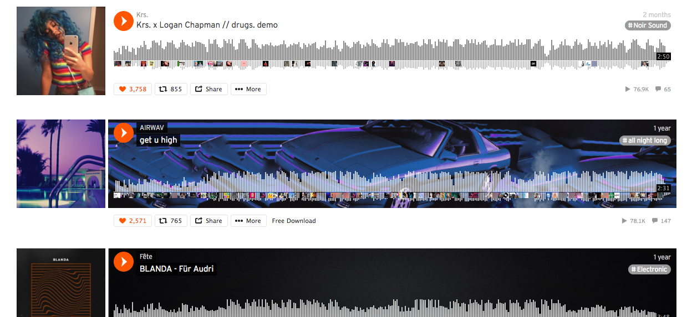
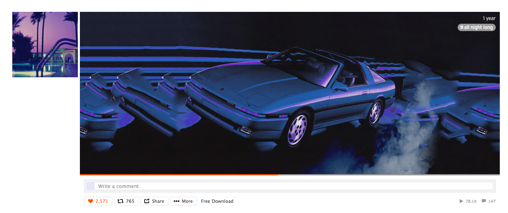
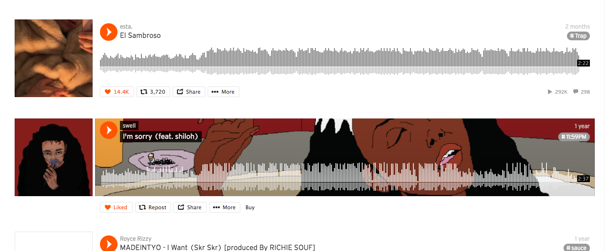
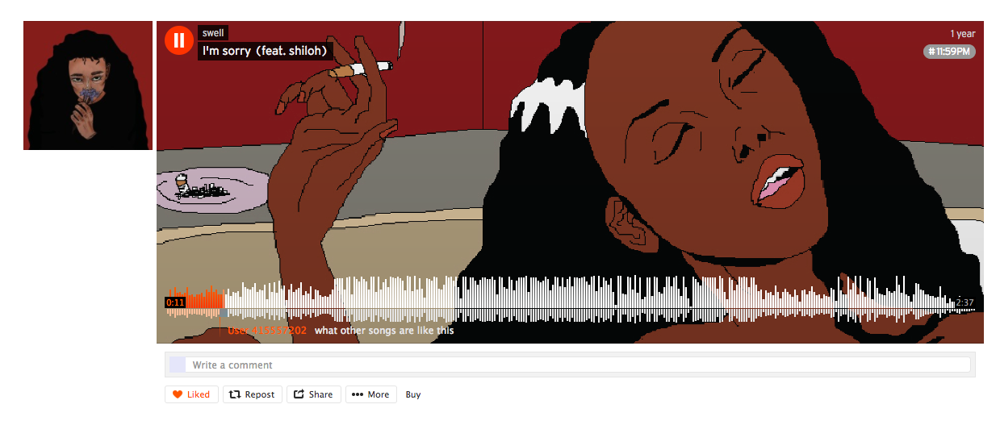
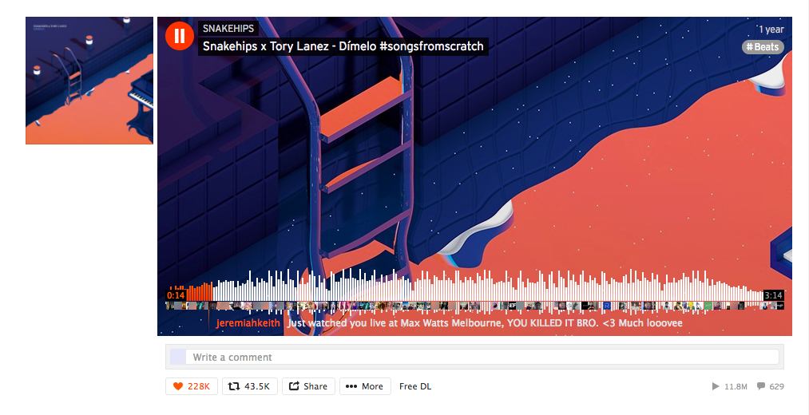
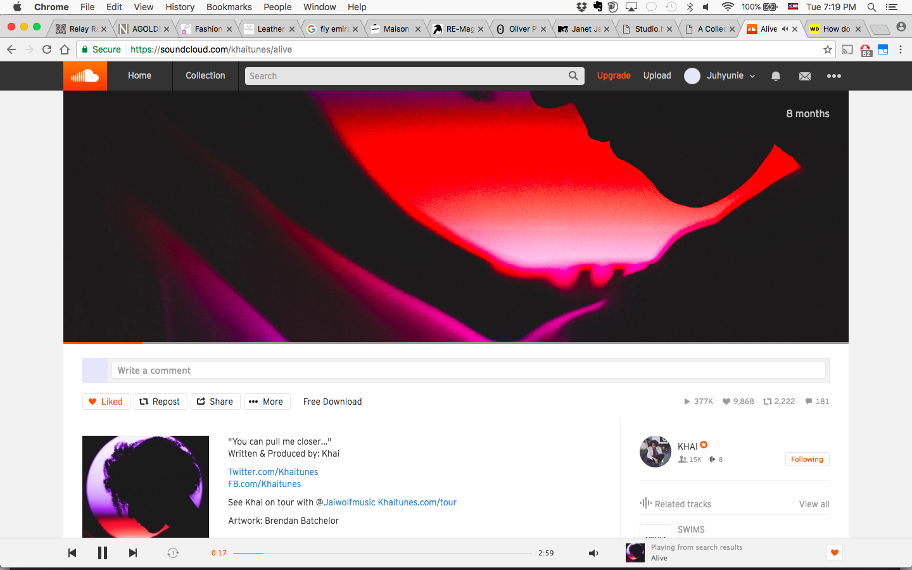
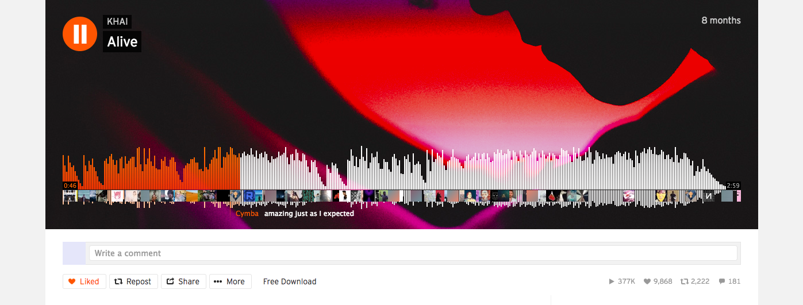

CORE INTERACTION STUDIO
Research
How layouts are made to better engage with music
- Good visuals --> better experience of the music
- Album covers set the tone for the music
Itunes
- Itunes Custom Colors
- Not available in current Itunes software
- System automatically recognizes album cover and sets font and background color accordingly
- I absolutely loved this feature on Itunes - this is made it so much more interesting to select an album and explore and 'sink' into the music
- however this feature is now disabled due to problems in visibility. When certain colors of an album are combined for the layout in wrong ways,
it made the tracklist illigible.

Soundcloud layout
- Layouts help artists to get their message across
- Tracks with a layout vs. without layout
- Example of track in SoundCloud timeline

- When track is selected and played

- Track in SoundCloud timeline

- Track is selected and played

- Track in timeline

- Track is selected and played - layouts that are the same image as the album cover still has the same effect, it helps the audience drift towards the mood of the song

- Another example

